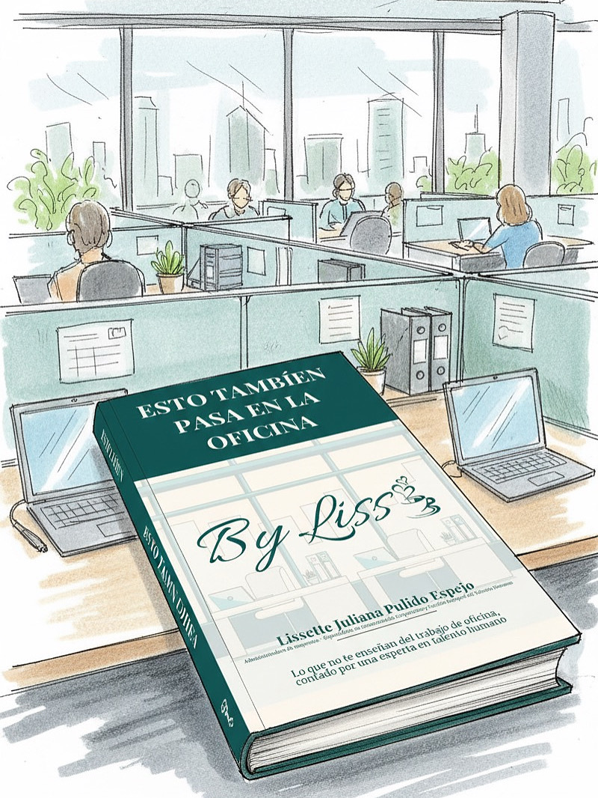

<!DOCTYPE html>
<html lang="es">
<head>
  <meta charset="UTF-8" />
  <meta name="viewport" content="width=device-width, initial-scale=1.0" />
  <title>Liss Pulido | Consultoría en Gestión Humana, Nómina y Administración</title>
  <meta name="description" content="Consultoría en Gestión Humana, Nómina, SG-SST y Administración Estratégica. Más de 8 años de experiencia optimizando procesos laborales, cumplimiento y bienestar organizacional en Colombia." />
  <meta name="keywords" content="consultoría gestión humana, nómina colombia, talento humano, SG-SST, administración estratégica, auditoría UGPP, bienestar laboral" />
  <meta name="author" content="Liss Pulido" />
  <meta property="og:title" content="Liss Pulido | Consultoría en Gestión Humana y Administración" />
  <meta property="og:description" content="Especialista en Gestión Humana, Nómina y Administración Estratégica. Procesos claros, cumplimiento normativo y decisiones humanas." />
  <meta property="og:type" content="website" />
  <meta property="og:locale" content="es_CO" />
  <link href="https://fonts.googleapis.com/css2?family=Playfair+Display:wght@500;600&family=Inter:wght@300;400;500;600&display=swap" rel="stylesheet">
  <style>
</head>
<body>

<header>
  <div>
    <span class="pill">Gestión Humana · Nómina · Administración</span>
    <h1>Liss Pulido</h1>
    <p class="subtitle">
      Profesional en Administración de Empresas · Especialista en Comunicación Corporativa<br>
      +8 años liderando procesos de Talento Humano, Nómina, SG‑SST y control administrativo.
    </p>
  </div>
  
</header>

<section>
  <h2>Perfil Ejecutivo</h2>
  <div class="highlight">
    <p>
      Profesional con amplia experiencia en la coordinación operativa y administrativa de Talento Humano
      en empresas de servicios, logística y proyectos corporativos. Especialista en nómina, seguridad social,
      cumplimiento UGPP, SG‑SST y control documental.
    </p>
    <p>
      Reconocida por la precisión, la organización y la capacidad de integrar procesos humanos con
      decisiones administrativas que sostienen la operación y reducen riesgos legales.
    </p>
  </div>
</section>

<section>
  <h2>Resultados que respaldan mi gestión</h2>
  <div class="grid">
    <div class="card">✔ 100% de precisión en nómina y seguridad social</div>
    <div class="card">✔ Reducción de tiempos de contratación de 30 a 10 días</div>
    <div class="card">✔ Cumplimiento total en auditorías UGPP</div>
    <div class="card">✔ Reducción del ausentismo injustificado en un 93%</div>
    <div class="card">✔ Migración de software de nómina sin pérdida histórica</div>
    <div class="card">✔ Programas de bienestar con +88% de participación</div>
  </div>
</section>

<section id="servicios">
  <h2>Consultoría y Servicios Profesionales</h2>
  <p>
    Acompaño organizaciones que requieren estructura, control y respaldo técnico en sus procesos laborales y administrativos.
    Mi enfoque combina cumplimiento normativo, eficiencia operativa y gestión humana responsable.
  </p>
  <div class="grid">
    <div class="card">
      <h3>Consultoría en Gestión Humana</h3>
      <p>
        Diagnóstico y fortalecimiento de procesos de talento humano, comunicación interna,
        bienestar laboral y acompañamiento a líderes.
      </p>
      <ul>
        <li>Procesos de vinculación y desvinculación</li>
        <li>Clima laboral y bienestar</li>
        <li>Relaciones laborales</li>
      </ul>
    </div>
    <div class="card">
      <h3>Nómina, Seguridad Social y UGPP</h3>
      <p>
        Gestión, revisión y control de nómina con enfoque preventivo frente a riesgos legales y financieros.
      </p>
      <ul>
        <li>Novedades de nómina y PILA</li>
        <li>Auditorías UGPP</li>
        <li>Contratación y liquidaciones</li>
      </ul>
    </div>
    <div class="card">
      <h3>Administración Estratégica</h3>
      <p>
        Organización documental, control interno y soporte administrativo
        para la toma de decisiones empresariales.
      </p>
      <ul>
        <li>Indicadores y reportes</li>
        <li>Control documental</li>
        <li>Soporte a dirección</li>
      </ul>
    </div>
  </div>
</section>

<section id="landing" class="highlight">
  <h2>¿Necesitas apoyo especializado?</h2>
  <p>
    Esta consultoría está dirigida a empresas, fundaciones y proyectos que requieren
    orden, cumplimiento y acompañamiento estratégico en talento humano y administración.
  </p>
  <p>
    Trabajo por proyecto, acompañamiento mensual o intervenciones puntuales,
    según la necesidad de tu organización.
  </p>
  <a class="button" href="https://wa.me/573227291101" target="_blank">Agendar conversación</a>
</section>

<section>
  <h2>Publicación Profesional</h2>
  <div class="ebook">
    
    <div>
      <h3>Esto también pasa en la oficina</h3>
      <p>
        Un ebook basado en experiencias reales del entorno laboral,
        analizadas desde la gestión humana, la comunicación corporativa
        y la salud emocional en las organizaciones.
      </p>
      <a class="button" href="https://hotmart.com/es/marketplace/productos/esto-tambien-pasa-en-la-oficina/J102465001J" target="_blank">Ver ebook</a>
    </div>
  </div>
</section>

<section>
  <h2>Comunidad & Contenido</h2>
  <p>
    Comparto análisis, experiencias reales y contenido profesional en mis canales:
  </p>
  <p>
    Instagram: <strong>@bylissth</strong><br>
    Canal WhatsApp: Comunidad profesional activa<br>
    Facebook: Fan Page By Liss
  </p>
</section>

<footer>
  © 2026 · Liss Pulido · Gestión Humana y Administración Estratégica
</footer>

</body>
</html>
